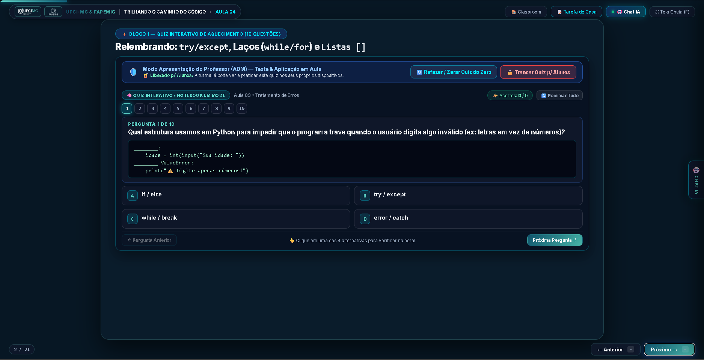
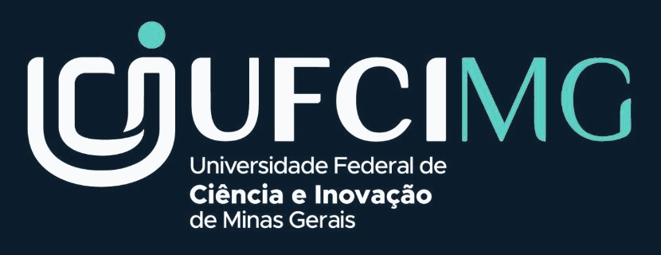
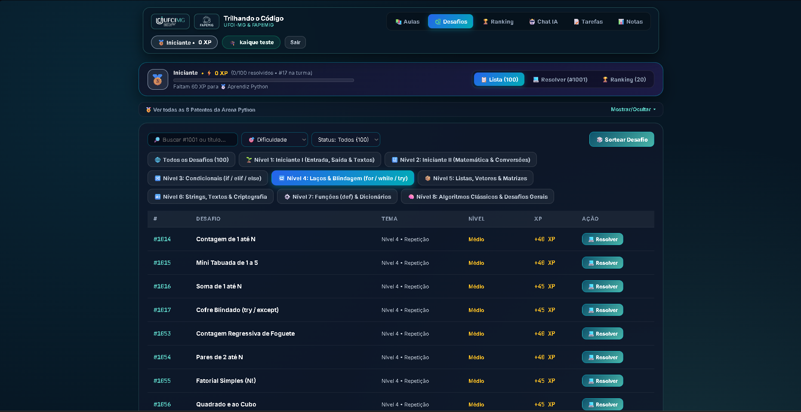
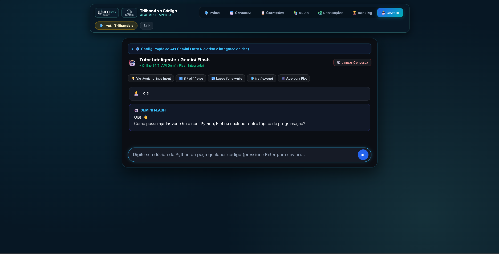
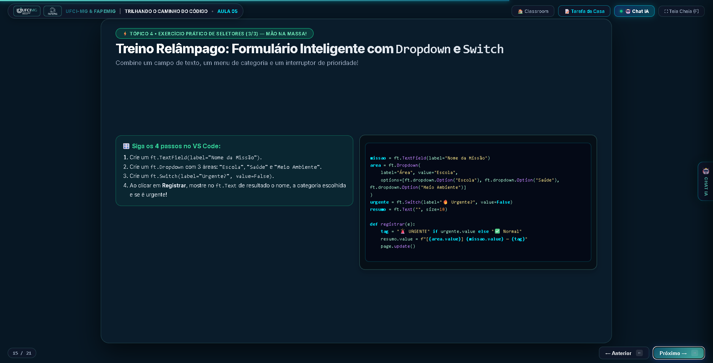

Slides e quizzes
O estudante responde ao quiz durante a aula e recebe a explicação da alternativa escolhida. Neste exemplo, a turma revisa como tratar uma entrada inválida em Python.




O Trilhando o Caminho do Código ensina programação a estudantes do 7º ao 9º ano de escolas públicas. Nas oficinas da UFCI-MG em Varginha, a turma aprende a escrever e testar código em Python, usa a IA para investigar dúvidas e cria aplicativos com Flet para problemas da escola ou da comunidade. Na Feira de Soluções, os estudantes apresentam o que construíram e explicam como funciona.
import flet as ft
def iniciar_jornada(aluno):
patente = "Explorador Lógico "
xp = 250
return f"Bem-vindo, {aluno}! ({patente} • +{xp} XP)"
print(iniciar_jornada("Estudante UFCI-MG"))Durante as oficinas, os estudantes revisam a aula, praticam programação e consultam o tutor enquanto desenvolvem seus aplicativos. Selecione uma imagem para ver a tela em tamanho maior.
O estudante responde ao quiz durante a aula e recebe a explicação da alternativa escolhida. Neste exemplo, a turma revisa como tratar uma entrada inválida em Python.

A turma escolhe entre 100 desafios, escreve a solução e testa o código no navegador. Os filtros ajudam a encontrar exercícios por tema, como os de repetição mostrados aqui.

O estudante pode escrever uma dúvida ou escolher um dos temas sugeridos. A conversa fica ao lado das atividades para consultar conceitos de Python e Flet durante a prática.

Neste exercício, a turma combina um campo de texto, uma lista de categorias e um seletor de prioridade para registrar uma missão. É uma etapa na construção dos aplicativos da trilha.

7 encontros estruturados levando você do primeiro print() até a apresentação do seu próprio aplicativo na Feira de Soluções da UFCI-MG.
print() e input().str, int, float), operadores lógicos e tomada de decisão.while e for e coleções com Listas [].{chave: valor}.on_click e navegação multi-telas.GEMINI.md, testes cruzados, apresentação pública e certificação 30h.